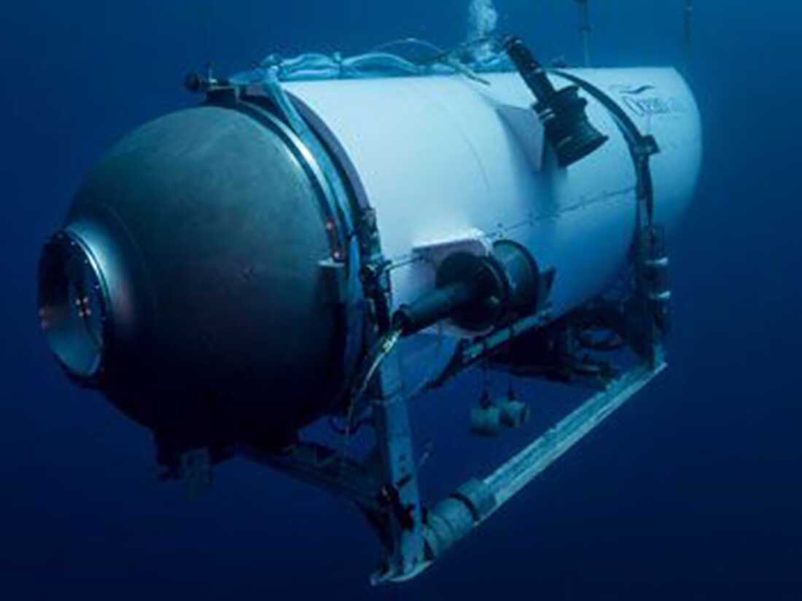

The missing craft is believed to be OceanGate's Titan submersible, a truck-sized sub that holds five people and usually dives with a four-day emergency supply of oxygen.
Tickets cost $250,000 (£195,000) for an eight-day trip including dives to the wreck at a depth of 3,800m (12,500ft).
Formerly known as Cyclops 2, Titan was a five-person submersible vessel operated by OceanGate Inc. The 6.7-metre-long (22 ft), 10,432 kg (23,000 lb) vessel was constructed from carbon fibre and titanium.
